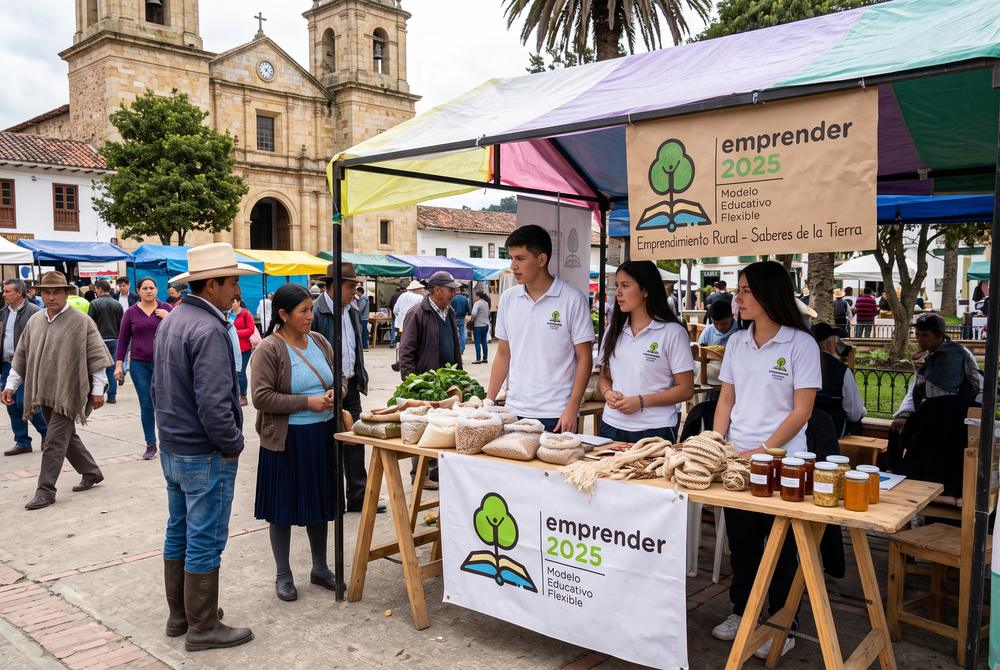

Campaña Departamental de Tolimensidad
"Soy tolimense, con orgullo": un movimiento de identidad colectiva, economía local y participación en los 47 municipios del departamento, con la Gobernación del Tolima.
Aliado: Gobernación del Tolima · 47 municipios